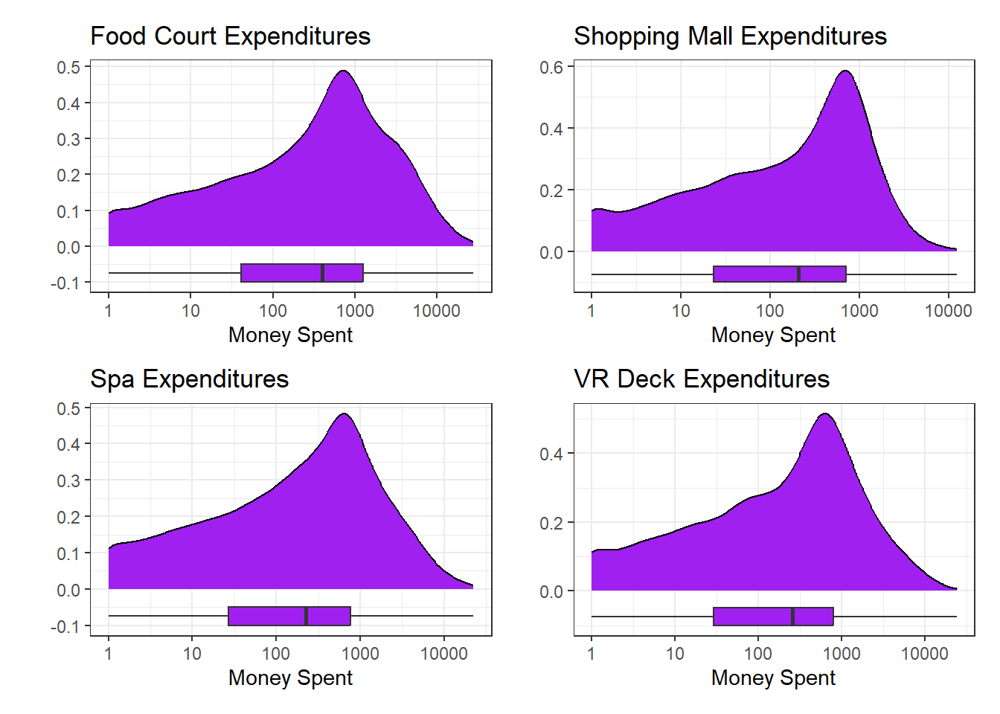
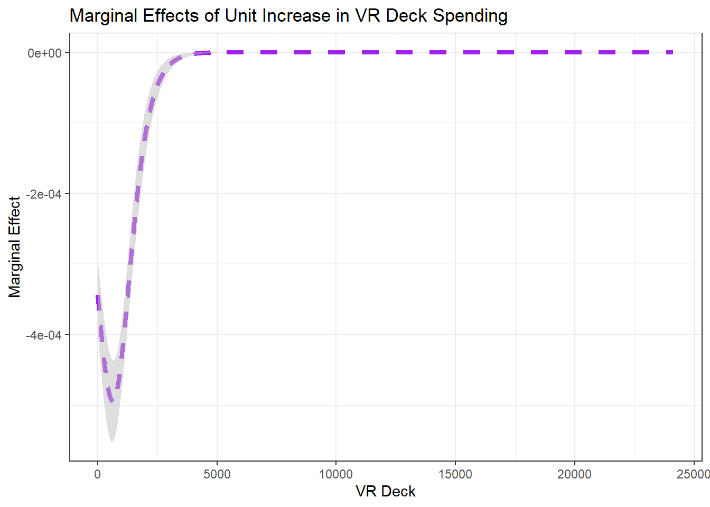
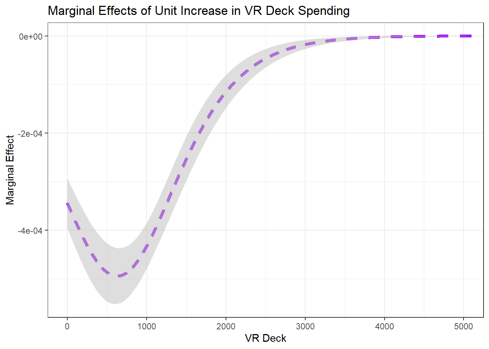

Like its namesake vessel, the Spaceship Titanic encountered tragedy when several of its passengers were warped to an alternate dimension during flight! This analysis is a post-mortem on the flight and passenger list so that we may better understand who is at risk for interdimensional transport during spaceflight and can take future precautionary measures.
Executive Summary
Note
Intentionally left blank, for now. This is the last section to be written.
Introduction
The year is 2063. We’ve come a long way from the early 2020’s, where billionaire tech entrepreneurs launched tiny rockets, holding a handful of celebrities or wealthy elites, into near-Earth orbit for an exorbitant pricetag. The future is now…well, was last week… Things are much more uncertain now. We were so excited with the launch of the Spaceship Titanic. It was supposed to be the beginning of a new era – affordable, long-range space travel for everyone. In hindsight, perhaps naming the thing the Titanic was a poor decision – too tempting for fate and karma.
In any case, space travel is an important venture for humanity at this point in our history as a species. Demand is high, even with last week’s disaster. We have a vested interest in safe and reliable travel through the cosmos and need to better understand what happened to the travelers who’ve disappeared and why it happened to them and not other passengers. Demand for space travel was expected to reach 86 million travelers next year – we can’t continue if we only expect 43 million passengers to arrive at their intended destination.
Exploratory Data Analysis
The original data set on the passengers contained 8693 passengers and 14 features (variables). We can see the first-few passengers’-worth of data printed out below.
Code
data %>%head() %>%kable()
passenger_id
home_planet
cryo_sleep
cabin
destination
age
vip
room_service
food_court
shopping_mall
spa
vr_deck
name
transported
0001_01
Europa
no
B/0/P
TRAPPIST-1e
39
no
0
0
0
0
0
Maham Ofracculy
no
0002_01
Earth
no
F/0/S
TRAPPIST-1e
24
no
109
9
25
549
44
Juanna Vines
yes
0003_01
Europa
no
A/0/S
TRAPPIST-1e
58
yes
43
3576
0
6715
49
Altark Susent
no
0003_02
Europa
no
A/0/S
TRAPPIST-1e
33
no
0
1283
371
3329
193
Solam Susent
no
0004_01
Earth
no
F/1/S
TRAPPIST-1e
16
no
303
70
151
565
2
Willy Santantines
yes
0005_01
Earth
no
F/0/P
PSO J318.5-22
44
no
0
483
0
291
0
Sandie Hinetthews
yes
That data was split into a collection of 6954 training observations and 1739 test observations for validating our final model’s performance. Care was taken to ensure that the passengers who were transported to an alternate dimension are proportionally represented across the training and test sets.
Univariate Analyses
Since our goal is to understand who was transported to an alternate dimension during flight and perhaps gain some insight as to why they were transported, we’ll start by understanding the transported variable and the distributions of the other variables available to us.
Code
train %>%ggplot() +geom_bar(aes(x = transported)) +labs(title ="Distribution of Transported Passengers",x ="Interdimensional Transport Status",y ="Count") +theme_bw()
The percentage of passengers transported in the training set is about 50.36%. Let’s look at the distributions of the other categorical variables in the data set.
From the top-left plot, we see that the majority of passengers board on Earth, while fewer passengers board on Europa and Mars. Some passengers have no boarding planet information (NA) – perhaps these passengers are crew members. In the top-right plot, we see that nearly 2/3 of passengers choose the Cryo Sleep option, while around 1/3 do not. Again, some passengers have missing data here. The distribution of destination planet is shown in the lower-right, and tells us that the most popular destination (by a large margin) is TRAPPIST-1e. The only other two destination planets are PSO J318.5-22 and 55 Cancri e. As in the previous plots, some passengers do not have an identified destination. Finally, the proportion of passengers with VIP status is about 2.23.
In each of the plots, we identified several passengers with missing values. There are 0 passengers missing information for all four of these variables. This means that our earlier conjecture about those passengers being crew is unlikely.
Let’s continue on to view the distributions of the numerical predictors available to us. We’ll start with the distribution of passenger ages.
The plot above shows a [near] 0-inflated distribution. That is, there is an inflated number of observations near 0, given the shape of the rest of the distribution. Ages are right-skewed, with a median passenger age of 27 years old. Next we’ll look at the distribution of room service charges.
Both of the plots above show the distribution of room service expenditures. From the plot on the left, we can see that the distribution is very strongly right-skewed. The majority of passengers spent very little on room service, but there were some passengers who ran up extremely large tabs! The plot on the right shows the same variable but on a logarithmic scale. This particular transformation ignores passengers who did not spend any money on room service. From this plot, we actually see that the median room service expenditure among passengers who utilized room service is quite high – it is about 0. We’ll continue our exploration of the available numerical features below, by working with the expenditures at the food court, shopping mall, spa, and VR deck. All of these are right skewed so we’ll just show the distributions on a logarithmic scale.
Code
p_food <- train %>%ggplot() +geom_density(aes(x = food_court), fill ="purple") +geom_boxplot(aes(x = food_court, y =-0.075), fill ="purple", width =0.05) +scale_x_log10() +labs(title ="Food Court Expenditures",x ="Money Spent",y ="") +theme_bw()p_shop <- train %>%ggplot() +geom_density(aes(x = shopping_mall), fill ="purple") +geom_boxplot(aes(x = shopping_mall, y =-0.075), fill ="purple", width =0.05) +scale_x_log10() +labs(title ="Shopping Mall Expenditures",x ="Money Spent",y ="") +theme_bw()p_spa <- train %>%ggplot() +geom_density(aes(x = spa), fill ="purple") +geom_boxplot(aes(x = spa, y =-0.075), fill ="purple", width =0.05) +scale_x_log10() +labs(title ="Spa Expenditures",x ="Money Spent",y ="") +theme_bw()p_vr <- train %>%ggplot() +geom_density(aes(x = vr_deck), fill ="purple") +geom_boxplot(aes(x = vr_deck, y =-0.075), fill ="purple", width =0.05) +scale_x_log10() +labs(title ="VR Deck Expenditures",x ="Money Spent",y ="") +theme_bw()(p_food + p_shop) / (p_spa + p_vr)

The distributions of these variables are all quite similar to one another. The distributions are skewed and 0-inflated. The distributions remain left-skewed even when plotted on a logarithmic scale and the observations at 0 are removed. The mean, median, standard deviation, and interquartile range for each expenditure venue are reported below without the removal of those zero observations.
The same metrics are reported below after removal of the zero expenditure values. That is, the summary metrics reported below consider only passengers who utilized the corresponding services. These values will align with measures indicated from the log-scale plots above.
Now that we understand the individual distributions of the variables, its time to look at how these predictors are associated with out response variable (transported). We’ll begin by looking for associations between transported and the categorical variables.
From the four plots above, we have the following takeaways. First, the plot on the left shows the passengers from Europa were much more likely to be transported than passengers from Mars or Earth. Passengers from Earth had a less than 50% transport rate while passengers from Mars had a slightly larger than 50% transport rate. Passengers in Cryo Sleep had an extremely elevated likelihood of transport than those who did not take advantage of Cryo Sleep. There were slight differences in transport rates by destination and by VIP status, but the choice to undergo Cryo Sleep seems to have been the largest influence over whether passengers were transported or not.
Now we’ll consider how the numerical features may be associated with the transported status of passengers.
In the group of plots appearing above, we see that higher food court and shopping mall expenditures were associate with those passengers who were transported than those who were not. Those individuals not being transported had higher room service, spa, and VR deck expenditures on average than those who were not transported.
As a result of this exploratory analysis, we’ve identified several important insights as we proceed to the model construction phase of this analysis. Firstly, about half of passengers were transported to an alternate dimension while the other half were transported safely. All of the numerical features are very heavily right-skewed aside from age. The variable most strongly associated with whether or not a passenger was transported may be the choice to Cryo Sleep during the flight. Other variables showed associations as well, but were less pronounced.
Model Construction and Assessment
Statistical Learning versus Machine Learning
There are two competing objectives that we can have in model construction.
Statistical Learning: We build models with the intent of discovering and interpreting associations between our available predictors and the response.
Fits models and then uses \(p\)-values to identify significant predictors, confidence intervals for coefficients, etc.
Machine Learning: We build models with the intent of making predictions as accurately as possible.
Uses methods like cross-validation for hyperparameter tuning and performance estimation
You do not necessarily need to choose just one approach or the other. Perhaps the problems/challenges you’ve set out to solve would benefit from both descriptive and predictive models. In this case, just make clear to the reader when you are switching between objectives.
Statistical Learning
Below, you’ll see an example and discussion of a logistic regression model being fit and analysed for statistical learning. Our goal here is to discover the characteristics of individuals who are at the highest (or elevated) risk of being transported to an alternate dimension during space flight.
Logistic Regression
Let’s start by building a model specification. We’ll use logistic regression (logistic_reg()) with the "glm" engine and the mode set to "classification".
Now that we have a model specification, we’ll create our recipe. Note that there are several “predictors” which are unique identifiers and therefore should not be utilized by the model. Those predictors are passenger_id and name. The cabin predictor is also a near-unique identifier (it creates very small groups), so we won’t use it as a predictor either. We use step_rm() to remove those predictors from consideration. Additionally, we’ll need to impute missing values for both numerical and categorical (nominal) predictors and then get dummy variable encodings for our categorical predictors as well.
Finally, we’ll fit our model to its training data.
Code
log_reg_fit <- log_reg_wf %>%fit(train)
Warning: glm.fit: fitted probabilities numerically 0 or 1 occurred
The warning we receive indicates that some probabilities have been rounded to 0 or 1. In these cases, our model is very certain (but a logistic regressor cannot actually output probabilities of exactly 0 or exactly 1 – we should be aware of this when reporting results).
Now that we’ve got the fitted model, we can see the estimated model coefficients and statistical measures associated with them (for example, standard errors and \(p\)-values). We use extract_fit_engine() to extract the fitted model from the fitted workflow and then tidy() to convert the results into a data frame.
Notice that all of the predictors are statistically significant (at the 5% significance threshold). The following are associated with a higher likelihood of interdimensional transport:
being younger (lower age due to negative coefficient)
lower spending on room_service, the spa, and the vr_deck
higher spending at the food_court and shopping_mall
being from Europa or Mars (as opposed to Earth)
taking advantage of cryo_sleep
traveling to 55 Cancri e (as opposed to PSO J318.5-22 or TRAPPIST-1e
On Feature (Predictor) Selection
For this particular model, we’d want to think a bit harder about a few items. First, do we really expect that destination planet should affect the likelihood of a passenger being transported to another dimension? Everyone is on the same ship and they haven’t arrived to their destination yet… By including the destination variable, we could be masking the effect of a truly influential predictor (that is, there could be a confounding effect here). We should have similar concerns about home_planet – do we expect that species might have an impact on the likelihood that a passenger is lost? Perhaps, but we should come up with a rationalization for, or against, the use of this predictor. As one additional comment, the space travel agency/company could be interested only in factors that they can control via ticketing. In this case, they may want to focus on the cryo_sleep service, cabin sleeping/housing arrangements, vip packages and accompanying services, and spending at the various ship amenities (room_service, food_court, etc.).
For categorical variables, we can make more meaningful interpretations by calculating and considering odds-ratios (we are able to use these odds-ratios in interpretations with numerical variables, but that interpretation is a bit more tricky). An odds ratio is calculated by raising \(e\) to the power of the corresponding model coefficient, and it measures how many times more likely an observation belonging to that category is to be transported to an alternate dimension than an observation belonging to the “base-level” for that categorical variable.
Note that, controlling for all other variables, an individual from Europa is nearly 10 times more likely than an individual from Earth to be transported to an alternate dimensions. Similarly, an individual from Mars is over twice as likely to be transported to an alternate dimension than a traveler from Earth. Again, controlling for all other variables, an individual engaging in cryo_sleep is over 3.5 times more likely to be transported to an alternate dimension during space travel (we should probably shut that system down!). Controlling for the other variables, individuals who are vips or whose destinations are PSO J318.5-22 or Trappist-1e carry slightly more than half the risk of those non-vip individuals or individuals travelling to 55 Cancri e.
We can plot confidence intervals for the odds ratios to provide a more intuitive (perhaps) view.
Code
log_reg_fit %>%extract_fit_engine() %>%tidy() %>%mutate(odds_ratio =exp(estimate),odds_lower =exp(estimate -2*std.error),odds_upper =exp(estimate +2*std.error) ) %>%ggplot() +geom_errorbarh(aes(xmin = odds_lower, xmax = odds_upper, y = term, color = term)) +geom_point(aes(x = odds_ratio, y = term, color = term)) +geom_vline(xintercept =1, linetype ="dashed") +labs(title ="Odds Ratios for Interdimensional Transport",x ="Odds Ratio",y ="" ) +theme(legend.position ="none") +theme_bw()
For numerical predictors, we can use the {marginaleffects} package in order to estimate the marginal effects of the numerical predictors on the probability of interdimensional transport. We need to create a data frame of new values of the variable we are interested in, while holding values of the other variables constant. The crossing() function will create a data frame that includes a row for each combination of the given values for our predictors. Be careful here though because crossing() can easily generate quite giant data frames.
mfx %>%filter(group =="yes") %>%select(vr_deck, estimate, conf.low, conf.high) %>%ggplot() +geom_line(aes(x = vr_deck, y = estimate), color ="purple", lty ="dashed", lwd =1.5) +geom_ribbon(aes(x = vr_deck, ymin = conf.low, ymax = conf.high),fill ="grey", alpha =0.5) +labs(x ="VR Deck",y ="Marginal Effect",title ="Marginal Effects of Unit Increase in VR Deck Spending") +theme_bw()

Spending in excess of \(5000\) at the vr_deck does not seem to impact the probability of an individual being transported. Let’s zoom in a bit one more moderate values of spending at the vr_deck.
Code
mfx %>%filter(group =="yes") %>%select(vr_deck, estimate, conf.low, conf.high) %>%ggplot() +geom_line(aes(x = vr_deck, y = estimate), color ="purple", lty ="dashed", lwd =1.5) +geom_ribbon(aes(x = vr_deck, ymin = conf.low, ymax = conf.high),fill ="grey", alpha =0.5) +labs(x ="VR Deck",y ="Marginal Effect",title ="Marginal Effects of Unit Increase in VR Deck Spending") +coord_cartesian(xlim =c(0, 5000)) +theme_bw()

We can see that additional spending at the vr_deck is associated with lower likelihood of interdimensional transport (the marginal effect is negative). The rate of reduction is greatest at around 600 to 700, but additional spending beyond 3500 seems to not be associated with any greater [meaningful] reduction in risk.
Advanced Models: Interaction
Note
We did not cover this in class – it is just here in case you are interested.
We can model more complex behaviors by including higher-order terms in our models. For example, we might include terms that raise a numerical predictor to a power (allowing for curvature in the association between log-odds of probability of interdimensional transport and the corresponding predictor). Alternatively (or additionally), we might consider interactions between two variables, allowing for the fact that the rate at which one predictor influences the probability of interdimensional transport to depend on the value of another predictor.
Below, we build a model that allows for the effect of food_court spending on the probability of interdimensional transport to depend on a passenger’s home_planet. Passengers boarding the Spaceship Titanic earlier are more likely to have spent more money at the food_court just by virtue of being aboard the ship longer. This adjustment compensates for that. We allow for the interaction via the step_interact() feature engineering step.
Notice that there are new model terms – food_court_x_home_planet_Europa and food_court_x_home_planet_Mars. These are the terms that allow for the effect of food_court spending on probability of interdimensional transport to depend on home_planet. Both of these new terms are statistically significant, indicating that the association between food_court spending on the probability of interdimensional transport is dependent (should be adjusted for) home_planet. Below is how we can visualize the marginal effects of food_court spending, accounting for differences across home_planet.
We can see that the marginal effects of food_court spending are consistently positive (increased food_court spending is associated with a higher likelihood of interdimensional transport). Any spending at all increases risk for all travellers, but those from Europa seem to have the greatest increased risk for initial spending and then the risk increases at slower rates for higher amounts of spending (although the risk still does increase). The increased risk to Martians associated with food_court spending seems to be almost constant, but the additional risk accumulated by these passengers is almost always higher than for Earthlings and Europeans. The increase in risk to Earthlings seems greatest at a food_court spending level of around 2000.
In the subsection that follows, we’ll use cross-validation to assess our logistic regression model’s performance relative to the performance metric we’ve rationalized as the one we should be caring most about. After running cross validation to estimate performance, we’ll tune the model hyperparameters to see if we can achieve greater performance.
Ethically, we feel a responsibility to optimize our model for recall. The repercussions associated with a false-negative (selling a traveler a ticket and them ending up transported to an alternate dimension) is much more severe than a false-positive (losing out on the ticket fee from a passenger who would have been safe to travel). In the discussions that follow, we’ll focus on recall but we’ll also compute the model accuracy and precision for additional context.
We’ll build cross-validation folds and then move into our model assessment and tuning.
Code
set.seed(234)train_folds <-vfold_cv(train, v =10, strata = transported)
Logistic Regression
Let’s start with a “simple” off-the-shelf logistic regression model using the same recipe() as we did for our descriptive model from the previous section. We’ll define the performance metrics we are interested in tracking (my_metrics), then we’ll run the cross-validation procedure with the fit_resamples() function, and collect the performance metrics using collect_metrics().
Notice that the average recall over the ten cross-validation folds was around 77.09%. This indicates that we should expect a model of this particular form (a logistic regressor with the predictors we utilized and the feature engineering steps in our recipe) to correctly capture about 77% of passengers who are truly at risk of interdimensional transport. This isn’t bad for a first pass – can we do better?
Results of Cross-Validation
The result of running fit_resamples() is a collection of performance metrics. We do not have a fitted model that can be used to make predictions until we fit() our model to its training data.